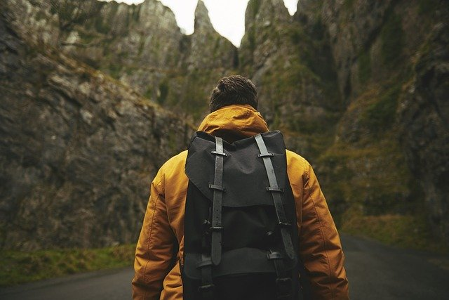

Grosir Produk Perjalanan - Peralatan

Apa tujuan favorit Anda dan apa yang dapat Anda lakukan?
Kepulauan Andaman adalah pulau terpencil di India yang terletak di Laut Andaman, tidak jauh dari Thailand. Ini sangat ideal untuk tempat istirahat aktif-pasif. Masih hampir tidak ada koneksi internet dan seluler, jadi yang tersisa hanyalah berenang dengan gajah, berjalan di beberapa hutan tertua di dunia, menyelam di selam scuba, snorkeling di antara terumbu karang dan, tentu saja, menikmati makanan India jalanan yang otentik.
Artikel mana di blog Anda yang harus dibaca?
Pertanyaan paling populer dari pembaca kami: dari mana mendapatkan uang untuk perjalanan. Dalam artikel "Cara menghasilkan uang saat bepergian dunia" kami berbagi pengalaman bertahun-tahun.